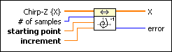
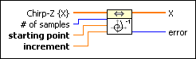
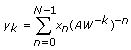
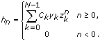
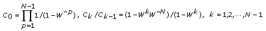
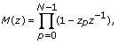
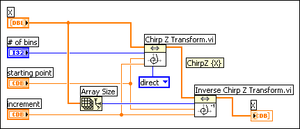

Inverse Chirp Z Transform VI
Owning Palette: Transforms VIs
Requires: Full Development System
Computes the inverse Chirp-Z transform of the input sequence Chirp-Z {X}.

 Add to the block diagram Add to the block diagram |
 Find on the palette Find on the palette |
Owning Palette: Transforms VIs
Requires: Full Development System
Computes the inverse Chirp-Z transform of the input sequence Chirp-Z {X}.

| Add to the block diagram |
Find on the palette |
 |
Chirp-Z {X} is the complex valued input sequence. The length of Chirp-Z {x} must be greater than or equal to # of samples. |
 |
# of samples specifies the length of X. # of samples must be less than or equal to the length of Chirp-Z {X}. If # of samples is less than or equal to 0, the VI sets # of samples to the length of Chirp-Z {X}. The default is –1. |
 |
starting point is the point at which to begin evaluating the Chirp-Z transform and is best described by the equation in the details section. If starting point is 0, the VI returns an error. |
|
increment is the increment between each point to evaluate for the Chirp-Z transform. increment cannot be 0. To avoid singular cases of the inverse Chirp-Z transform, increment must be different from e2π*j*k/L wherek = 0, 1, …,L–1 L = 1, 2,…,N–1 and N is # of samples. |
 |
X is the inverse Chirp-Z transform of Chirp-Z {X}. |
 |
error returns any error or warning from the VI. You can wire error to the Error Cluster From Error Code VI to convert the error code or warning into an error cluster. |
If Y represents the sequence Chirp-Z {X}, the following equation shows how the VI performs the Chirp-Z transform to obtain the sequence X.

for k = 0, 1, …, M—1, where N is the length of X (# of samples), M is the length of Chirp-Z {X}, A is the starting point, W is the increment, Xn is the nth element of X, and yk is the kth element of Chirp-Z {X}.
The inverse Chirp-Z transform computes the sequence X from Chirp-Z {X}. This VI employs a convolution-based method to implement this transform according to the following equations.
xn=hn*mn
with

where

and
zk=0, 1, …, N—1
mn can be obtained from its z-transform M(z):

The following block diagram illustrates using the Inverse Chirp-Z Transform VI to compute the inverse Chirp-Z transform of some Chirp Z transformed signal.
